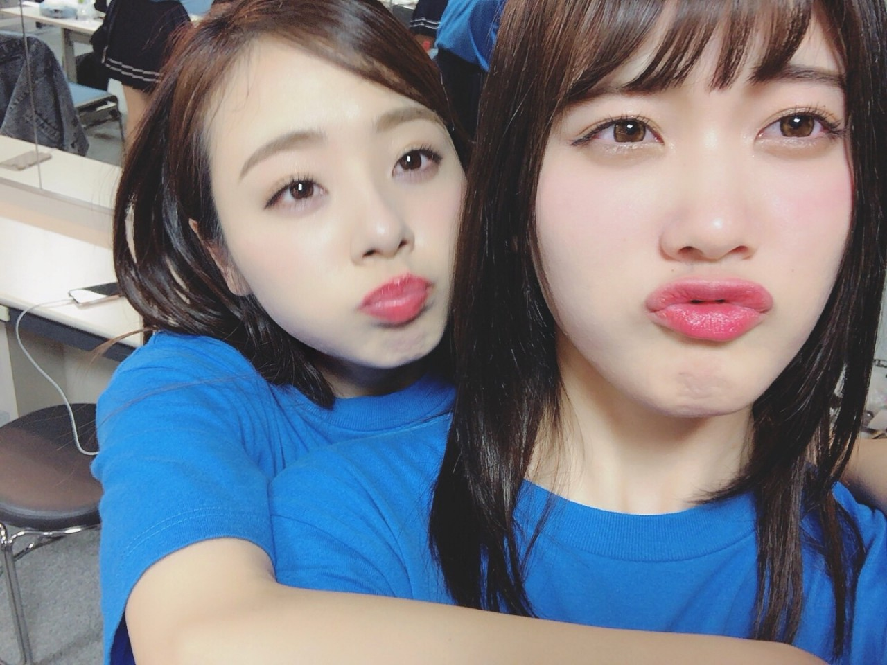
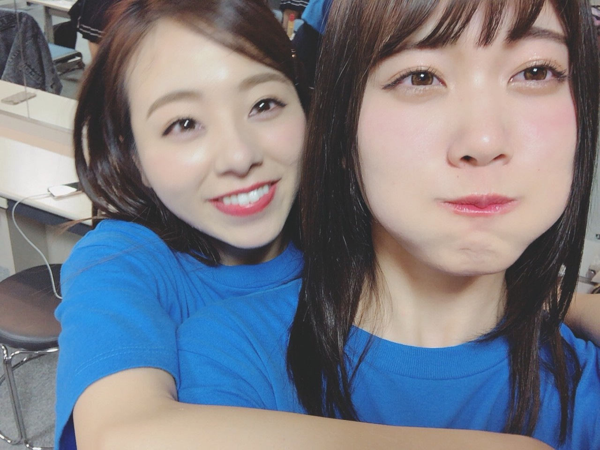
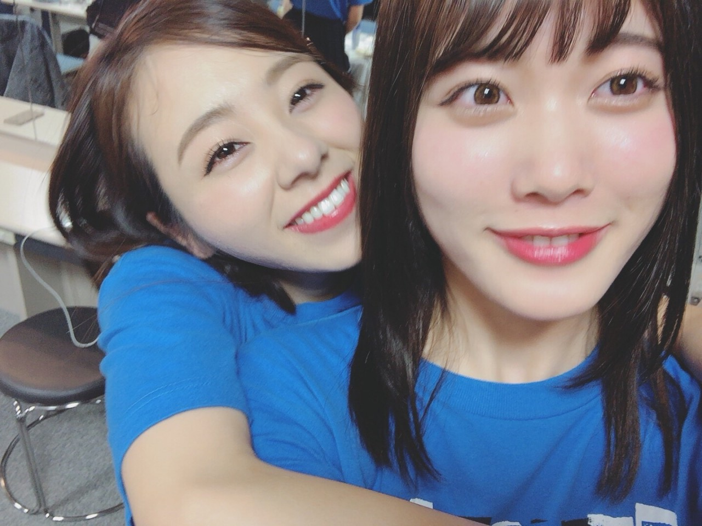
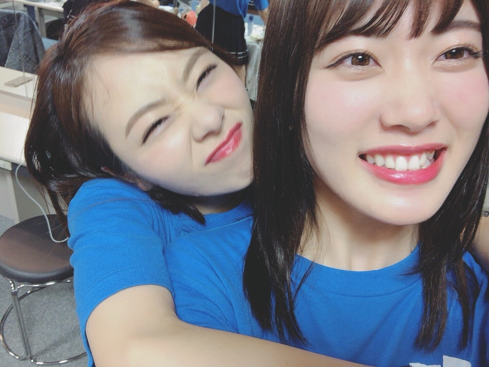

| 2017/12 26 Tue | CDTV. Xmas. 近畿四国. |
おつかれ様です♡
昨日はXmasでしたね.＊
皆さん何して過ごしたのかな...
Xmasプレゼントは貰ったかな？
ローストチキンやケーキ食べたかな？
そして私は昨日の『Xmas CDTV』の生放送で，『気づいたら片想い』を歌わせて頂きました♡
メンバーからも人気の高い曲で，私も大好きなので，ああして皆さんに「Xmasに聴きたい曲」として選んで頂けた事が本当に嬉しいです.＊
どうでしたかね♡？
そして...。

仙台 初握手会‼︎
私服はグレー×グレー。
スカートがベロア素材で光沢感があるのがお気に入り。
靴下まで黒とかだと地味になっちゃうので...いい色の合わせました♩笑
5部ではサンタコスしたよぉ。
ズンダシェイクや萩の月も大好き‼︎
又飲みたい食べたいよ～。
そしてそして～、、、
近畿・四国ツアーありがとうございました‼︎‼︎‼︎
Live完走直後の写真♡
1.

2.

3.

4.

まだあるのー♡
モバメに送ります！
先ずは大阪。
大阪は私の地元。
地元でアンダラをする事が念願の夢だったので本当に嬉しかったです‼︎
実はあの会場に子供の頃に行った事があって... それは私はステージに立つ側じゃなくて、見る側で。
大好きな大好きな安室奈美恵さんのLiveに行ったんです。
だから私にとって凄く特別な時間でした‼︎
次に滋賀。
ぁ、楽しい！熱い！盛り上がった！はもう全会場でした‼︎ それは先に言っておきます♡
滋賀は、綺麗でお洒落な会場だったな～。
滋賀に子供の頃，親と琵琶湖でジェットスキーしに遊び行ってたんですよ。
わ～ 又ジェットスキーしたい‼︎
次に兵庫。
兵庫は，かなりステージと皆さんの距離が近く感じました‼︎ ぃゃ、近かった。普通に手届く位でしたね。
MC中に「ろってぃーーーー」って誰が1番長く言い続けれるかゲームみたいなのが始まって...。かなり面白かったです♡笑 途中で息吸い直してる人が沢山居てゲームにならないグダグダ感最高でした笑笑
家族で神戸ポートピアランドにも遊び行った事ありますよー♬
そして、徳島と香川。
ぃゃ～、本当にやっと四国でLiveができて嬉しかったです｡ﾟ(ﾟ´ω`ﾟ)ﾟ｡
四国大好きなんですよ～。。
ツアーで行ったばかりだけど...
行き足りない♡ 誰か一緒に旅行いきましょ？
子供の頃に道後温泉に行った事があって、道後温泉以外にも色々街を歩いたり見たりして、子供ながらに『ぁ～ 素敵な場所だな～』と感じていたので、又ゆっくりプライベートでも行きたい♡
一日だけ休みの日があったので、徳島に着いてすぐメンバーと神社に行ったり，お蕎麦食べたりもさせて頂きました。
香川には道後温泉に行った時に一度旅行に行った事あるんです（╹◡╹）
そしてLive前のろってぃーコールは全会場、本当に本当にありがとうございました‼︎‼︎
Liveに来てくださった皆様，応援してくださった皆様，本当にありがとうございました。
皆様のおかげでこうして最高のライブを作り上げる事ができました。
メンバーやスタッフさんにも感謝です。
これからもよろしくお願いします！
又 更新します♬
モバメ755も沢山やっていますのでチェックよろしくお願い致します♡♡♡
まひろより.＊
コメント(230)
2017/12/26 18:00